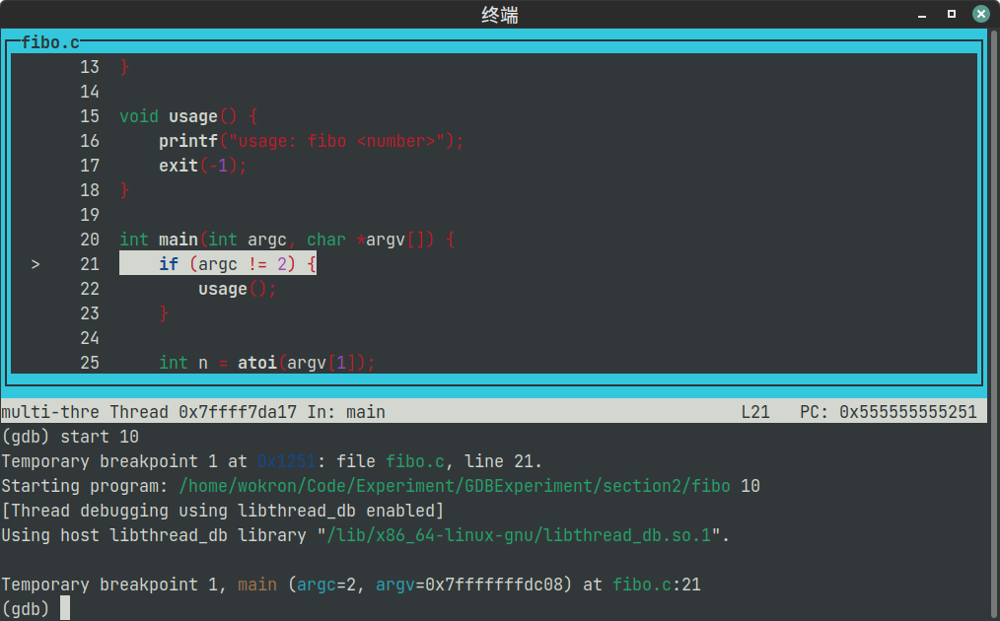

本文是北航《操作系统》课程预习教程的一部分。此版本由本人编写。
2024 年课程实验环境由 GXemul 更换为 QEMU，为了方便同学适应新的实验环境，在预习教程中特地新增《GDB：程序的解剖术》和《QEMU 模拟器介绍》两篇文章。
回想起刚刚踏入编程世界的时候，大概每个人都有这样的经历：仔细编写的程序总是得不到正确的结果，即便将代码从头到尾检查几遍，依旧找不出隐藏其中的错误。虽然我们对自己所写的代码了如指掌，但是代码终究是静态的，无法反映真实的运行情况；虽然各种各样的测试样例可以让我们发现错误，但是程序终归是只有输入输出的黑箱，其中的运行机理让我们束手无策。
为了解决这样的困境你肯定试过很多办法，比如说大名鼎鼎的 “printf” 大法。但是在原有的逻辑中插入没有意义的输出反而会使代码的结构更加混乱，过量的输出同样更加可能掩盖错误的真相，最终离发现错误的目标越来越远。我们需要采用另一种方法，能够在不侵入代码原有逻辑的前提下，追踪程序的运行情况，从而发现程序运行中出现的错误。
GDB 简介
能够实现追踪并控制程序运行功能的程序称为 Debugger，中文称其为调试器。不同语言有着不同的调试器，如 Python 的 PDB、Java 的 JDB。而我们在本篇文章中介绍的则为 GDB，全称为 “GNU Debugger“。
GDB 的吉祥物，一条 “射水鱼”。擅长射出水柱击落岸边植物上的昆虫（Bug）。
GDB 是一个功能十分强大的调试器，它适用于 C、C++、Go、Rust 等多种语言。GDB 最初由 GNU 项目的创始人理查德·马修·斯托曼（Richard Matthew Stallman）编写，并作为 GNU 项目的一部分。根据 GDB 官网的描述，GDB 的主要功能包括：
- 启动程序并指定可能影响其行为的任何内容。
- 使程序在指定条件下停止。
- 当程序停止时，检查发生了什么。
- 更改程序中的内容，以便可以尝试纠正一个错误的影响，并继续了解另一个错误。
接下来我们会逐步介绍上述功能。看看 GDB 是如何像手术刀一样解剖程序运行的机理，发现病灶所在的。
准备工作
在开始之前需要说明两点：
- 接下来的内容我们将在 Ubuntu 中进行，这与本课程的实验环境保持一致。同时建议同学们尽量在学习和开发时多多使用 Linux 环境，因为许多项目都只支持 Linux 平台，或只提供 Linux 下的教程和文档。
- 为了更好地理解 GDB 的指令操作，同学们最好在阅读教程的同时同步进行操作。
实验所提供的跳板机上会安装好所有需要的环境，因此同学们也可以使用跳板机完成本文操作。但是跳板机中会出现由于无法关闭
address space randomization导致无法设置断点的问题。这一问题可以通过在 GDB 界面中输入set disable-randomization off指令解决。
GDB 的安装
在 Ubuntu 下应该预装了 GDB。可以通过查看版本命令 gdb -v 检查是否安装。
$ gdb -v
GNU gdb (Ubuntu 12.1-0ubuntu1~22.04) 12.1
Copyright (C) 2022 Free Software Foundation, Inc.
License GPLv3+: GNU GPL version 3 or later <http://gnu.org/licenses/gpl.html>
This is free software: you are free to change and redistribute it.
There is NO WARRANTY, to the extent permitted by law.
如果没有，通过以下命令安装
$ apt-get update
$ apt-get install gdb
加载程序
接下来我们以一个简单的程序作为例子
// adds.c
#include <stdio.h>
int main() {
int n;
scanf("%d", &n);
int c = 0;
for (int i = 1; i <= n; i++) {
c += i;
printf("%d, ", c);
}
printf("\n");
return 0;
}
经过前面教程对编译部分的补充，我们知道编译这个代码可以使用如下命令，生成名为 adds 的可执行文件。
$ gcc adds.c -o adds
但是此种方法产生的目标程序会去掉许多在运行时不需要的信息，导致无法进行调试。因此我们还需要为命令加上 -g 选项。启用该选项将保留许多额外的信息以供调试器使用。不启用和启用 -g 产生的编译产物分别是目标程序的 Release 版本和 Debug 版本。
$ gcc -g adds.c -o adds
因此使用调试器也需要对程序产生改动，但是与
printf方法需要修改源代码不同，调试版本不改变原有的代码逻辑，不需要开发者关注。也即调试模式对开发者 “透明” 。
之后我们就可以使用 GDB 对目标程序进行操作了。为 GDB 指定要运行的程序有两种方式。
-
其一是直接在命令中指定。这样会进入 GDB 的交互界面，并将
adds可执行文件作为将要 Debug 的程序。$ gdb adds -
其二是直接运行 GDB 进入交互界面，并通过 GDB 的
file <executable>指令加载可执行文件$ gdb (gdb) file adds
如果你看到如下内容，则说明 GDB 成功加载了 adds 程序。
Reading symbols from adds...
现在我们不考虑追踪程序运行，直接让程序运行直至完成。这需要用到 GDB 中的 run 指令。对于我们的程序，GDB 的执行结果如下：
Reading symbols from adds...
(gdb) run
Starting program: /your/path/to/program/adds
[Thread debugging using libthread_db enabled]
Using host libthread_db library "/lib/x86_64-linux-gnu/libthread_db.so.1".
10
1, 3, 6, 10, 15, 21, 28, 36, 45, 55,
[Inferior 1 (process 85435) exited normally]
在 GDB 环境下也可以进行标准输入输出。
最后输入 quit 指令即可退出 GDB
传入额外参数
上面是最简单的情况，许多时候还需要在执行程序的时候传入参数，以下面 echo 程序的实现为例。
// echo.c
#include <stdio.h>
#include <stdlib.h>
void usage() {
printf("usage: echo <string>\n");
exit(-1);
}
int main(int argc, char *argv[]) {
if (argc != 2) {
usage();
}
printf("%s\n", argv[1]);
return 0;
}
注意需要使用 ./echo 而不是 echo。
$ gcc -g echo.c -o echo
$ ./echo 'hello, world!'
hello, world!
我们编写的 echo 程序需要传入一个参数。和加载程序有两种方法相同，传入参数也有两种方法。
-
第一种方法是在命令行中传入参数。对于上述命令
./echo 'hello, world!'，对应的 GDB 命令为。$ gdb --args ./echo 'hello, world!'注意
--args选项中包括了要运行的程序./echo。 -
第二种方法是在 GDB 交互界面中使用
set args [arg]...指令设置参数。$ gdb (gdb) file ./echo (gdb) set args 'hello, world!'
经过如上步骤后，我们的程序就正式加载到 GDB 环境中。我们同样使用 run 指令直接运行程序。对于命令 ./echo 'hello, world!'，GDB 的执行结果如下：
(gdb) run
Starting program: /your/path/to/program/echo 'hello, world!'
[Thread debugging using libthread_db enabled]
Using host libthread_db library "/lib/x86_64-linux-gnu/libthread_db.so.1".
hello, world!
[Inferior 1 (process 84663) exited normally]
可以发现现在运行的程序正确地带上了参数 /your/path/to/program/echo 'hello, world!'，并输出了 hello, world! 的结果。
实际上
set args [arg]...和run两条指令可以合为一条，即run [arg]...。
让我们总结一下本节用到的指令：
| 指令 | 用途 |
|---|---|
file <executable> |
加载程序 |
run |
运行程序 |
set args [arg]... |
设置程序的参数 |
run [arg]... |
以设定的参数运行程序 |
quit |
退出 GDB |
Step by Step：追踪程序运行
如果我们使用 GDB 的目的仅仅是使运行程序的过程更加繁琐，那还不如不用。所以接下来我们就正式介绍 GDB 的第一个功能：追踪程序运行。
追踪程序运行，意味着我们要看到程序执行每一条指令的过程。接下来我们以这个计算斐波那契数列的程序为例。探索这个程序的运行过程。
// fibo.c
#include <assert.h>
#include <stdio.h>
int fibo(int n) {
assert(n > 0);
if (n <= 2) {
return 1;
} else {
return fibo(n - 1) + fibo(n - 2);
}
}
int main(int argc, char *argv[]) {
int n = 10;
int fibo_n = fibo(n);
printf("fibo(%d) = %d\n", n, fibo_n);
return 0;
}
我们编译源代码，并使用 GDB 执行程序 ./fibo。
$ gcc -g fibo.c -o fibo
$ gdb ./fibo
进入 GDB 环境后，这次我们不再使用 run 指令，而是使用 start 指令。start 指令会使程序停在 main 函数的起始处。执行该指令得到的输出应该类似如下内容。
(gdb) start
Temporary breakpoint 1 at 0x11eb: file fibo.c, line 16.
Starting program: /your/path/to/program/fibo
[Thread debugging using libthread_db enabled]
Using host libthread_db library "/lib/x86_64-linux-gnu/libthread_db.so.1".
Temporary breakpoint 1, main (argc=1, argv=0x7fffffffd9a8) at fibo.c:15
15 int n = 10;
(gdb)
类似于
run指令，start指令也可以添加参数：start [arg]...。
我们可以看到，在上述内容中出现了 15 int n = 10; 的内容。这表示程序接下来将要执行的是第 15 行的条件判断。我们查看源代码，发现这确实是程序进入 main 函数时的第一条代码。
想要一步步执行程序，我们需要使用指令 step。
(gdb) step
16 int fibo_n = fibo(n);
(gdb)
之后如果需要执行下一步，不需要重复输入 step，只需要按回车即可。这时我们会发现 GDB 直接进入到了 fibo 函数中，并指出此时的参数 n = 10。这符合 step 指令的功能，那就是一步步地执行程序。
(gdb)
fibo (n=10) at fibo.c:6
6 assert(n > 0);
(gdb)
再敲击两次回车，下一步将要执行的就是 return fibo(n - 1) + fibo(n - 2); 这条语句。
(gdb)
7 if (n <= 2) {
(gdb)
10 return fibo(n - 1) + fibo(n - 2);
(gdb)
这时再敲击一次回车会发生什么情况？如果再敲击一次回车，我们就调用了 fibo(n - 1)。因此递归进入 fibo 函数，并且此时的参数 n = 9。
(gdb)
fibo (n=9) at fibo.c:6
6 assert(n > 0);
(gdb)
这样可不行，如果我们真的一步步执行程序，就会一次次地进入被调用的函数中，看到许多不必要的运行细节。因此我们还需要跳过函数内部的机制。
我们先要从 fibo(9) 中退出。在函数内部跳出当前函数的指令是 finish。通过执行该指令后产生的信息可以得知，我们并没有陷入 fibo(9) -> fibo(8) -> fibo(7)... 的递归调用中，而是相当于直接执行完成了 fibo(9)，并得到了其返回值 $1 = 34。
(gdb) finish
Run till exit from #0 fibo (n=9) at fibo.c:6
0x00005555555551c1 in fibo (n=10) at fibo.c:10
10 return fibo(n - 1) + fibo(n - 2);
Value returned is $1 = 34
(gdb)
我们跳出了 fibo(9)，但之后如果我们还是使用 step 指令，就又会进入 fibo(8)。因此这里还要引入另一条指令 next。该指令用于执行当前所在的行，而跳过当前行中的任何函数调用。
输入 next 指令后 GDB 显示 “接下来将要执行的行” 是第 12 行，即函数末尾的右括号，这是什么意思？
(gdb) next
12 }
(gdb)
这实际上表示的是位于函数中最后一条指令执行后和函数返回前的时刻。因为我们知道 GDB 显示的行是将要执行的行，因此前一条指令的执行结果只有到下一行时才能知道。但执行完函数最后一条指令后就应该从函数中返回，此时本函数的状态就不可以得知了。所以为了能表示 “执行完函数最后一条指令” 这样的状态，GDB 使用了函数的右括号所在的行。
之后，我们再使用一次 next 指令或 step 指令就可以真正的跳出 fibo(10) 函数。这里本人直接使用回车，表示沿用 next 指令。这一点和 step 类似。
(gdb)
main (argc=1, argv=0x7fffffffd9a8) at fibo.c:17
17 printf("fibo(%d) = %d\n", n, fibo_n);
(gdb)
为了不进入 printf 函数，我们同样使用回车。发现程序正确输出了 fibo(10) = 55。
(gdb)
fibo(10) = 55
19 return 0;
(gdb)
实际上我们并不能进入到
printf函数中，因为我们并没有 printf 的实现代码。
此后的程序运行我们就不需要关注了，有如下处理方法：
-
可以使用
continue指令继续程序的正常运行。程序会继续运行直至退出。(gdb) continue Continuing. [Inferior 1 (process 102673) exited normally] -
或者也可以使用
kill指令直接杀死程序进程。(gdb) kill Kill the program being debugged? (y or n) y [Inferior 1 (process 108565) killed] -
又或者使用
start指令重新运行程序(gdb) start The program being debugged has been started already. Start it from the beginning? (y or n) y Temporary breakpoint 2 at 0x5555555551eb: file /your/path/to/program/fibo.c, line 15. Starting program: /your/path/to/program/fibo [Thread debugging using libthread_db enabled] Using host libthread_db library "/lib/x86_64-linux-gnu/libthread_db.so.1". Temporary breakpoint 2, main (argc=1, argv=0x7fffffffd9a8) at /your/path/to/program/fibo.c:15 15 int n = 10; (gdb)
顺便一提，如果各位使用过编辑器或 IDE 的调试功能，应该不会忘记那几个不同编辑器和 IDE 通用的按钮设计。这几个按钮实际上就对应了在本节中介绍的几个指令。这里以 vscode 中的按钮为例，从左向右分别为：
- 继续：对应 GDB 中的
continue指令- 步过：对应 GDB 中的
next指令- 步入：对应 GDB 中的
step指令- 步出：对应 GDB 中的
finish指令- 重启：对应 GDB 中的
start指令（在程序运行中使用）- 停止：对应 GDB 中的
kill指令
让我们总结一下本节用到的指令：
| 指令 | 用途 |
|---|---|
start |
启动程序并使其停在 main 函数起始处 |
start [arg]... |
以设定的参数启动程序并使其停在 main 函数起始处 |
step |
执行下一步程序，包括进入函数 |
finish |
跳出当前函数 |
next |
执行单行程序，不进入函数 |
continue |
继续执行函数 |
kill |
杀死程序进程 |
重剑无锋：设置断点
逐步运行虽然能看到所有细节，但是 Debug 时我们常常只关心某几个可能出错的模块，因此需要让程序在我们不关心的地方自行运行。但是自行运行的程序要怎么得知哪里就是开发者所关心的地方呢？这就需要使用断点。断点是对程序中某些行的标记，当程序执行到断点所在位置，并满足一些条件时，就将程序由自行执行转换为通过 GDB 的指令控制执行。断点看似简单，实则变化万千，是调试器最为重要的功能。
普通断点
这么说可能有些抽象，接下来我们对 fibo.c 的代码做一些修改，并以此为例子。
// fibo.c
#include <assert.h>
#include <stdio.h>
#include <stdlib.h>
int fibo(int n) {
assert(n > 0);
if (n <= 2) {
return 1;
} else {
return fibo(n - 1) + fibo(n - 2);
}
}
void usage() {
printf("usage: fibo <number>");
exit(-1);
}
int main(int argc, char *argv[]) {
if (argc != 2) {
usage();
}
int n = atoi(argv[1]);
for (int i = 1; i <= n; i++) {
int fibo_i = fibo(i);
printf("fibo(%d) = %d\n", i, fibo_i);
}
return 0;
}
我们编译源代码，并进入 GDB 中。
$ gcc -g fibo.c -o fibo
$ gdb fibo
现在考虑这样一个问题，如果我们想要忽略之前的过程，直接跳到 fibo 函数第一次调用的地方，并进入 fibo 函数中。应该如何操作？
此时我们就需要将一个断点设置在 int fibo_i = fibo(i); 这条语句处。但是目前在 GDB 中我们可能不清楚这条语句具体的位置，因此我们首先要使用 list [position] 指令查看源代码。
list [position] 指令的使用形式包括 list（显示当前运行位置的源代码）、list <line nunmber>、list <file>:<line number>、list <function name> 和 list <file>:<function name>。同时在使用一次 list 之后也可以再通过回车查看源代码的后续内容。
这里我们可以使用 list main 并敲击一次回车得知 int fibo_i = fibo(i); 这条语句的行号为 28。
(gdb) list main
15 void usage() {
16 printf("usage: fibo <number>");
17 exit(-1);
18 }
19
20 int main(int argc, char *argv[]) {
21 if (argc != 2) {
22 usage();
23 }
24
(gdb)
25 int n = atoi(argv[1]);
26
27 for (int i = 1; i <= n; i++) {
28 int fibo_i = fibo(i);
29 printf("fibo(%d) = %d\n", i, fibo_i);
30 }
31
32 return 0;
33 }
(gdb)
我们知道了这条语句所在的行号，现在可以设置断点了。设置断点的指令为 break。与 list 指令一样，有五种使用形式。这里我们使用 break 28 设置断点。
(gdb) break 28
Breakpoint 1 at 0x1280: file fibo.c, line 28.
之后我们使用 run 10 运行程序 ./fibo 10。在未设置断点的情况下，我们知道 run 指令会直接完成程序的执行。但是这一次程序会在断点处停下。
(gdb) run 10
Starting program: /your/path/to/program/fibo 10
[Thread debugging using libthread_db enabled]
Using host libthread_db library "/lib/x86_64-linux-gnu/libthread_db.so.1".
Breakpoint 1, main (argc=2, argv=0x7fffffffd988) at fibo.c:28
28 int fibo_i = fibo(i);
(gdb)
之后我们输入 step 指令，就进入了 fibo 函数中。
(gdb) step
fibo (n=1) at fibo.c:7
7 assert(n > 0);
(gdb)
这时让我们输入 continue 再次让程序自行执行，会发生什么？因为在循环中有断点的存在。所以会在经过一次循环后在断点处重新停下。同时可以看到程序在自行运行时产生了输出 fibo(1) = 1。
(gdb) continue
Continuing.
fibo(1) = 1
Breakpoint 1, main (argc=2, argv=0x7fffffffd988) at fibo.c:28
28 int fibo_i = fibo(i);
(gdb)
为了避免重复在这一断点处暂停，我们可以删除或者暂时禁用断点。首先我们使用 info breakpoints 查看所有断点信息。其中各列的信息分别是断点编号（Num）、断点类型（Type）、是临时断点还是永久断点（Disp）、目前是启用状态还是禁用状态（Enb）、断点的位置（Address）、断点当前的状态（What，作用的行号、已经命中的次数等）。
(gdb) info breakpoints
Num Type Disp Enb Address What
1 breakpoint keep y 0x0000555555555280 in main at fibo.c:28
breakpoint already hit 2 times
我们需要得知断点的编号。目前这唯一的断点编号为 1。我们可以使用 disable breakpoints [num]... 暂时禁用断点。之后再次查看断点信息，发现 Enb 列由 y 变为了 n。如果想要重新启用断点，则需要使用 enable breakpoints [num]...。
(gdb) disable breakpoints 1
(gdb) info breakpoints
Num Type Disp Enb Address What
1 breakpoint keep n 0x0000555555555280 in main at fibo.c:28
breakpoint already hit 2 times
如果这个断点不再需要，那么也可以直接删除。需要使用 delete breakpoints [num]... 指令。
(gdb) delete breakpoints 1
(gdb) info breakpoints
No breakpoints or watchpoints.
删除了断点之后，我们重新执行 continue 指令。这一次没有任何断点的阻挡，程序顺利完成。
(gdb) continue
Continuing.
fibo(2) = 1
fibo(3) = 2
fibo(4) = 3
fibo(5) = 5
fibo(6) = 8
fibo(7) = 13
fibo(8) = 21
fibo(9) = 34
fibo(10) = 55
[Inferior 1 (process 109274) exited normally]
(gdb)
临时断点
但是本章的内容并没有结束。这一回我们使用 start 10 指令重新运行 ./fibo 10 程序。不知你有没有发现，输出的信息中出现了 “breakpoint”。这是因为 start 指令本质上就是在 main 函数处添加一个断点，并运行程序。
(gdb) start 10
Temporary breakpoint 2 at 0x555555555251: file fibo.c, line 21.
Starting program: /your/path/to/program/fibo 10
[Thread debugging using libthread_db enabled]
Using host libthread_db library "/lib/x86_64-linux-gnu/libthread_db.so.1".
Temporary breakpoint 2, main (argc=2, argv=0x7fffffffd988) at fibo.c:21
21 if (argc != 2) {
(gdb)
但是这里的断点还是有些不同，因为这是 “Temporary“ breakpoint 而非普通的 Breakpoint。设置临时断点后，程序只在此处暂停运行一次，之后断点就自动删除。
设置临时断点的指令是 tbreak，使用方法和 break 一致。我们在程序的循环处（27 行）设置一个临时断点。之后使用 continue 指令运行程序。可以发现程序暂停在了循环处。
(gdb) tbreak 27
Temporary breakpoint 3 at 0x555555555277: file fibo.c, line 27.
(gdb) continue
Continuing.
Temporary breakpoint 3, main (argc=2, argv=0x7fffffffd988) at fibo.c:27
27 for (int i = 1; i <= n; i++) {
因此
start [arg]...就等价于tbreak main和run [arg]...两条指令。
而如果此时使用 info breakpoints 查看断点信息，就会发现这一临时断点已不存在
(gdb) info breakpoints
No breakpoints or watchpoints.
条件断点
虽然就目前介绍的内容来看，断点已经足够强大，但是对于追踪程序运行来说还是有所不足。比如说如果我们希望程序在运行第 9 次循环内语句时终止，要怎么设置断点呢？如果是普通断点，那么每次循环程序都会暂停；如果是临时断点，那么程序就只会暂停一次。这两种断点走向了两个极端，而我们需要的断点类型则位于这两者中间，那就是条件断点。
条件断点指只有满足一定条件才中断程序运行的断点。创建条件断点的指令是 break [position] if <condition>。其中 [position] 部分和 break 一致。而 <condition> 部分应该是一个在当前上下文中符合语义的表达式，如 a >= b + 1，其中 a 和 b 均已定义。一个比较简单的判断方法是如果在代码中添加 if (<condition>){}，不会出现编译或运行时错误，则该表达式就可以使用。
同样的，也可以设置条件临时断点。指令为
tbreak <position> if <condition>。
回到我们的 GDB 调试环境。这次我们使用指令 break 28 if i == 9 在循环中创建一个第 9 次进入循环时暂停程序的断点。之后执行 continue 指令，根据程序的输出可知确实在第 9 次循环时触发了断点。
(gdb) break 28 if i == 9
Breakpoint 4 at 0x555555555280: file fibo.c, line 28.
(gdb) continue
Continuing.
fibo(1) = 1
fibo(2) = 1
fibo(3) = 2
fibo(4) = 3
fibo(5) = 5
fibo(6) = 8
fibo(7) = 13
fibo(8) = 21
Breakpoint 4, main (argc=2, argv=0x7fffffffd988) at fibo.c:28
28 int fibo_i = fibo(i);
另外我们也可以修改断点的条件。需要使用 condition <num> <condition> 指令，该指令也可以将普通断点变为条件断点。这里我们将断点的条件修改为 i == 10。
首先使用 info breakpoints 指令查看断点编号。
(gdb) info breakpoints
Num Type Disp Enb Address What
4 breakpoint keep y 0x0000555555555280 in main at fibo.c:28
stop only if i == 9
breakpoint already hit 1 time
随后即可使用 condition 4 i == 10 指令修改断点的条件。之后使用 continue 指令继续运行程序，结果程序在循环内再一次暂停。
(gdb) condition 4 i == 10
(gdb) continue
Continuing.
fibo(9) = 34
Breakpoint 4, main (argc=2, argv=0x7fffffffd988) at fibo.c:28
28 int fibo_i = fibo(i);
如果出现了遍历链表或者使用迭代器这类没有显式计数的循环，又要如何设置 “在进行第 K 次循环时暂停” 这样的断点呢？可以使用
ignore <num> <times>指令。该指令表示忽略某一断点前<times>次的访问。同时也可用上临时断点。因此指令为tbreak <position>和ignore <num> <K-1>。
因为引入了条件断点，所以现在在程序的同一位置可以出现多个断点。GDB 也提供了一个删除某一位置所有断点的指令。使用 clear <position> 即可。如果此位置只有一个断点，则该指令也等同于 delete breakpoints <num>，甚至更为方便。
观察点
为断点添加条件使得我们能够更加灵活地设置程序中断的时机。然而，就算是条件断点也需要设定具体的位置，这意味着我们需要在设置断点前就定位 Bug 的大致范围和发生时机。对于功能较少的程序来说，这是可以做到的；但是对于规模较大、涉及到大量内存操作的程序，程序出错的时机常常并和 Bug 产生的位置不同，仅仅使用普通的条件断点难以处理这种情况。
于是 GDB 引入了一类特殊的断点，称为观察点（Watchpoint）。设定观察点时需要指定一个表达式而不需要指定位置，程序运行时 GDB 会持续监视该表达式的取值，当其取值发生变化时，程序就会停止。可以这样认为，观察点是只设定了条件而没有设定位置的特殊的条件断点，而其条件就是表达式的取值发生了变化。
在讲解条件断点时我们举了一个 “如何让程序在运行第 9 次循环内语句时终止” 的例子。现在我们也可以使用观察点来实现这一效果。还以 fibo 程序为例。
设置观察点的指令为 watch <expression>，其中 <expression> 为在当前上下文中合法的表达式。因此要设置和 i 相关的观察点，我们需要先进入到循环中。
$ gdb fibo
...
(gdb) tbreak 27
(gdb) run 10
...
Temporary breakpoint 1, main (argc=2, argv=0x7fffffffda68) at fibo.c:27
27 for (int i = 1; i <= n; i++) {
这时我们希望程序在第 9 次循环时停下，只需要设置 watch i >= 9 的观察点即可。这样在进入第 9 次循环时，i >= 9 的取值就会发生变化，从而中断程序运行。
之后我们输入 continue 指令，查看运行结果。发现程序正常暂停。
(gdb) watch i >= 9
Hardware watchpoint 2: i >= 9
(gdb) continue
Continuing.
fibo(1) = 1
fibo(2) = 1
fibo(3) = 2
fibo(4) = 3
fibo(5) = 5
fibo(6) = 8
fibo(7) = 13
fibo(8) = 21
Hardware watchpoint 2: i >= 9
Old value = 0
New value = 1
0x00005555555552ad in main (argc=2, argv=0x7fffffffda68) at fibo.c:27
27 for (int i = 1; i <= n; i++) {
(gdb)
随后我们可以使用两次 step 指令进入 fibo 函数内，可以发现此时确为第 9 次循环。
(gdb) step
28 int fibo_i = fibo(i);
(gdb)
fibo (n=9) at fibo.c:7
7 assert(n > 0);
我们也可以使用 info breakpoints 指令查看观察点的信息。
(gdb) info breakpoints
Num Type Disp Enb Address What
2 hw watchpoint keep y i >= 9
breakpoint already hit 1 time
因为观察点同属于断点，所以也可以使用
disable breakpoints、enable breakpoints、delete breakpoints等指令。
除了观察点，GDB 中还可以设置读观察点（Read Watchpoint）和访问观察点（Access Watchpoint）。设置读观察点需要使用指令 rwatch <expression>，当程序中出现读取目标表达式的值的操作，就会停止程序运行；设置访问观察点需要使用指令 awatch <expression>，当程序中出现读取或写入目标表达式的值的操作，就会停止程序运行。因为这两类观察点的使用和普通观察点类似，所以就不再重复介绍了。
注意分别观察点的取值改变和访问观察点的写入的区别。
最后还需要强调一遍，设置观察点时的表达式并不需要是条件表达式。另外观察点常用于调试内存问题，这时表达式通常和指针或地址有关。为了加深各位同学的认识，我们可以再举一些例子。
如下的代码中，mysterious_func 函数调用 free 释放了内存，但没有将指针值置为 NULL。
// watch.c
#include <stdio.h>
#include <stdlib.h>
void mysterious_func(int **pptr) {
free(*pptr);
// *pptr = NULL;
}
int main() {
int *ptr = NULL;
ptr = malloc(sizeof(int));
*ptr = 10;
printf("value is %d\n", *ptr);
mysterious_func(&ptr);
if (ptr != NULL) {
printf("value is %d\n", *ptr);
}
return 0;
}
这导致程序访问了野指针，可能产生不可预期的后果。我们可以编译并执行该程序，结果如下。对本程序来说，只是取得了一个没有意义的数据；但如果在操作系统中发生，则可能产生内核错误（Panic）等严重的问题。
$ gcc -g ./watch.c -o watch
$ ./watch
value is 10
value is 1648141505
而通过观察点就可以轻易定位问题所在。我们使用如下一系列指令，在程序运行时监视 *ptr 的取值，最终找到异常值产生的位置。
$ gdb watch
(gdb) start
(gdb) watch *ptr
(gdb) continue
(gdb) continue
(gdb) continue
Continuing.
value is 10
Hardware watchpoint 2: *ptr
Old value = 10
New value = 1431655769
tcache_put (tc_idx=0, chunk=0x555555559290) at ./malloc/malloc.c:3160
3160 ./malloc/malloc.c: 没有那个文件或目录.
当然现在我们只能得知异常值出自 malloc.c 的实现中。通过下一节的学习，我们可以查看程序运行时的调用栈信息，进而将问题定位在 mysterious_func 函数中。
除了野指针，另一类可能在实验中经常遇到的 Bug 是数组越界。我们可以以如下代码为例：
// watch2.c
#include <stdio.h>
int careless_sum(int arr[], int n) {
int i = 0, total = 0;
while (i < n) {
total += arr[++i];
// total += arr[i++];
}
return total;
}
int main() {
int arr[10] = {0, 1, 2, 3, 4, 5, 6, 7, 8, 9};
printf("total = %d\n", careless_sum(arr, 10));
return 0;
}
各位同学应该可以看得出来，使用 ++i 而非 i++ 导致了数组越界。我们编译并运行，“成功” 得到错误的结果。
$ gcc -g ./watch2.c -o watch2
$ ./watch2
total = -3779795
调试数组越界问题，我们只需要监视程序何时访问了数组之后的地址即可。根据我们上面的介绍，可以使用访问观察点。我们首先在 GDB 中运行程序，之后使用 awatch arr[10] 设置访问观察点。arr[10] 是数组 arr 之后的第一个 4 字节地址空间。如果该空间被访问，说明发生了数组越界问题。
$ gdb watch2
(gdb) start
(gdb) next
(gdb) awatch arr[10]
Hardware access (read/write) watchpoint 2: arr[10]
接着，我们使用 continue 指令继续程序运行。结果发现程序确实发生了中断。这样我们就定位到了数组越界发生的位置。
(gdb) continue
Continuing.
Hardware access (read/write) watchpoint 4: arr[10]
Value = 1896377344
careless_sum (arr=0x7fffffffd910, n=10) at ./watch2.c:7
7 total += arr[++i];
让我们总结一下本节用到的指令：
| 指令 | 用途 |
|---|---|
list [position] |
显示指定位置源代码 |
break [position] |
在指定位置设置断点 |
info breakpoints |
显示所有断点信息 |
disable breakpoints [num]... |
禁用指定断点 |
enable breakpoints [num]... |
启用指定断点 |
delete breakpoints [num]... |
删除指定断点 |
tbreak [position] |
在指定位置设置临时断点 |
break [position] if <condition> |
在指定位置设置条件断点 |
tbreak [position] if <condition> |
在指定位置设置条件临时断点 |
condition <num> <condition> |
修改断点的条件 |
ignore <num> <times> |
忽略断点前指定次数的访问 |
clear <position> |
删除指定位置的所有断点 |
watch <expression> |
为指定表达式设置观察点 |
rwatch <expression> |
为指定表达式设置读观察点 |
awatch <expression> |
为指定表达式设置访问观察点 |
程序的机理：查看运行时数据
经过之前那么多节内容的学习，我们知道了如何追踪程序的执行过程、如何让程序在特定条件下暂停，但是这些内容我们都只是在程序流中漫游。在这些之外程序还有一个重要的组成部分，那就是数据。
这回就让我们沿用上一节中用到的 fibo 程序。应用之前学过的内容，我们直接进入到 fibo 函数调用的最深处。
$ gdb fibo
(gdb) start 10
(gdb) break 28 if i == 10
(gdb) continue
(gdb) tbreak fibo if n == 1
(gdb) continue
Continuing.
Temporary breakpoint 3, fibo (n=1) at fibo.c:7
7 assert(n > 0);
我们知道程序到达现在所处的位置，需要从 fibo(10) 一路递归到 fibo(1)。可是目前我们只能得知现在位于 fibo(0) 函数内。如果能得知程序运行中的数据信息呢？
这里要介绍本节第一个指令 backtrace。该指令用于查看到目前位置的函数调用信息。我们输入该指令，可以发现经历了十分漫长的调用过程。
(gdb) backtrace
#0 fibo (n=1) at fibo.c:7
#1 0x0000555555555210 in fibo (n=3) at fibo.c:11
#2 0x0000555555555201 in fibo (n=4) at fibo.c:11
#3 0x0000555555555201 in fibo (n=5) at fibo.c:11
#4 0x0000555555555201 in fibo (n=6) at fibo.c:11
#5 0x0000555555555201 in fibo (n=7) at fibo.c:11
#6 0x0000555555555201 in fibo (n=8) at fibo.c:11
#7 0x0000555555555201 in fibo (n=9) at fibo.c:11
#8 0x0000555555555201 in fibo (n=10) at fibo.c:11
#9 0x000055555555528a in main (argc=2, argv=0x7fffffffd988)
at fibo.c:28
但是这样还不够，调用栈信息中只包括了函数的参数信息，我们希望得知任意变量的取值。这可以通过 print <expression> 指令实现。其中 <expression> 应当符合当前的上下文，这与条件断点的 <condition> 类似。
表达式不一定仅仅是变量。比如下面的例子。
(gdb) print 1 + 2 * 3 $1 = 7
我们可以通过使用 print n 查看当前函数中参数 n 的值。
(gdb) print n
$1 = 1
不过 n 的取值本就在函数调用信息中显示了。可不可以获取其他的参数，比如说此时循环中 i 的值？
答案当然是可以。但我们首先需要移动到调用栈的不同位置。这通过一组指令进行控制，包括 up [steps]、down [steps] 和 frame [level]。
up [steps] 和 down [steps] 用于控制在栈帧间移动，而 [steps] 指示移动多少次。需要注意的是，这里的 up 是向调用者的方向移动，而 down 是向被调用者的方向移动。这或许是由于程序的栈空间向低地址增长，被调用者的栈帧位于调用者 “之下“。这里我们先执行 up 再执行 down，可以看出栈帧的移动。
(gdb) up
#1 0x0000555555555210 in fibo (n=3) at fibo.c:11
11 return fibo(n - 1) + fibo(n - 2);
(gdb) down
#0 fibo (n=1) at fibo.c:7
7 assert(n > 0);
而 frame [level] 指令则是直接根据层次跳转到指定的栈帧。其中层次指的是 backtrace 指令的输出中位于各栈帧左侧的标号。
现在我们想要到达 main 函数所在的栈帧，只需要使用 frame 9 即可。
(gdb) frame 9
#9 0x000055555555528a in main (argc=2, argv=0x7fffffffd988)
at fibo.c:28
28 int fibo_i = fibo(i);
之后就可以使用 print 得到 i 的值了。
(gdb) print i
$2 = 10
需要注意的是移动栈帧位置并不改变程序当前执行的语句。程序当前执行的语句只有
step、next、finish等等函数才可改变。
另外我们也可以打印数组中的值。不过由于 C 中并不记录数组的长度，所以还需自行指定。这里我们以
main函数中的argv为例。获取数组中指定范围内的值需要使用形如arr[<index>]@<len>的语法规则。表示显示数组中从<index>处开始长度为<len>的范围内各元素的值。(gdb) print argv[0] $3 = 0x7fffffffddbf "/your/path/to/fibo" (gdb) print *argv $4 = 0x7fffffffddbf "/your/path/to/fibo" (gdb) print argv[0]@2 $5 = {0x7fffffffddbf "/your/path/to/fibo", 0x7fffffffddf8 "10"}
最后，学过计算机组成的同学都知道，其实指令也是数据。所以在 GDB 中我们也可以将代码显示出来，不过是将机器码转换到了汇编码。使用的指令也是 disassemble [position]，“反汇编”。其具体形式包括 disassemble、disassemble <function>、disassemble <address>、disassemble <start>,<end> 等等，这里就不详述了。需要注意的是汇编中出现的箭头表示 PC 寄存器所在的位置（或者函数返回的地址，就如下面对 main 函数栈帧的反汇编部分）。
0x000055555555527e <+64>: jmp 0x5555555552ad <main+111>
0x0000555555555280 <+66>: mov -0xc(%rbp),%eax
0x0000555555555283 <+69>: mov %eax,%edi
0x0000555555555285 <+71>: call 0x5555555551a9 <fibo>
=> 0x000055555555528a <+76>: mov %eax,-0x4(%rbp)
0x000055555555528d <+79>: mov -0x4(%rbp),%edx
0x0000555555555290 <+82>: mov -0xc(%rbp),%eax
0x0000555555555293 <+85>: mov %eax,%esi
0x0000555555555295 <+87>: lea 0xd8a(%rip),%rax # 0x555555556026
0x000055555555529c <+94>: mov %rax,%rdi
0x000055555555529f <+97>: mov $0x0,%eax
0x00005555555552a4 <+102>: call 0x555555555080 <printf@plt>
让我们总结一下本节用到的指令：
| 指令 | 用途 |
|---|---|
backtrace |
查看调用栈信息 |
up [steps] |
向调用者方向移动栈帧 |
down [steps] |
向被调用者方向移动栈帧 |
frame [level] |
移动到指定的栈帧 |
print <expression> |
查看表达式的值 |
disassemble [position] |
查看对应位置的汇编码 |
高级调试：修改运行时程序
在计算机科学的远古时期，为了充分利用有限的资源，一些开发者会将程序设计为可以在运行时修改自身，这称为自修改代码。我们的 GDB 虽然没有这么厉害，但也可以在调试时动态修改程序的数据或运行，从而让程序偏离原本的执行路径。这一功能可用于在调试时修正程序错误，从而验证 Bug 修复的可行性；或者跳过当前 Bug，查看后续程序的执行情况。
为此我们需要一个有 Bug 的程序作为例子。但是 Bug 有种特点，无意间可能就会写出，但自行构造却又很是麻烦。所以恕本人能力有限，只能用拙劣的手法生生造出一个 Bug 了。
下面的代码中，讨厌的全局变量 dangerous_global 会使函数 add 产生副作用，当调用第 5 次 add 函数时就会产生错误的计算结果。
// bug.c
#include <assert.h>
#include <stdio.h>
int dangerous_global = 0;
int add(int a, int b) {
if (++dangerous_global == 5) {
return a;
} else {
return a + b;
}
}
int main() {
int test_cases[6][3] = {
{1, 2, 3}, {1, -1, 0}, {3, 0, 3},
{-2, 5, 3}, {-2, -5, -7}, {-10, 0, -10},
};
for (int i = 0; i < 6; i++) {
int a = test_cases[i][0];
int b = test_cases[i][1];
int expect = test_cases[i][2];
int result = add(a, b);
assert(result == expect);
}
return 0;
}
我们编译并运行该程序，确实我们的断言出现了失败。
$ gcc -g bug.c -o bug
$ ./bug
bug: bug.c:26: main: Assertion `result == expect' failed.
已放弃 (核心已转储)
从上面的信息中我们并不能得知到底哪个测试样例出现了错误。这个问题有两个解决方法。一是使用更加完善的单元测试框架，不过在这里不会进一步介绍；二是使用 GDB 重新运行，GDB 会在断言出错时产生中断。
$ gdb ./bug (gdb) run ... bug: bug.c:26: main: Assertion `result == expect' failed. Program received signal SIGABRT, Aborted. ... (gdb)此时使用
backtrace查看调用栈信息。因为调用栈可能较长，这里可以使用backtrace -2只显示调用栈底两个栈帧的信息。从中我们得知main函数的层次为 7。(gdb) backtrace -2 #6 0x00007ffff7dd7b86 in __assert_fail ( assertion=0x55555555600a "result == expect", file=0x555555556004 "bug.c", line=26, function=0x55555555601b <__PRETTY_FUNCTION__.0> "main") at ./assert/assert.c:101 #7 0x00005555555552e4 in main () at bug.c:26随后移动到
main函数所在的栈帧，需要使用指令frame 7。接着查看result和expect的值即可。(gdb) frame 7 #7 0x00005555555552e4 in main () at bug.c:26 26 assert(result == expect); (gdb) print result $1 = -2 (gdb) print expect $2 = -7
我们得知了出错的测试用例后进入此时的 add 函数（具体过程省略），查看 dangerous_global 的值为 4。之后 ++dangerous_global == 5 的结果将为真，进入 if 所在分支，得到错误的结果。
...
(gdb) step
add (a=-2, b=-5) at bug.c:8
8 if (++dangerous_global == 5) {
(gdb) print dangerous_global
$3 = 4
我们可以如何修改代码使得程序正常运行呢？首先，是 dangerous_global 产生的 Bug，因此可以选择修改该变量的值。这需要用到 set variable <variable> = <expression> 指令。这里我们就将 dangerous_global 的值改为 5，从而跳过了错误的情况。接着使用 continue 指令，结果显示程序正常退出，断言没有失败。
(gdb) set variable dangerous_global = 5
(gdb) print dangerous_global
$4 = 5
(gdb) continue
Continuing.
[Inferior 1 (process 25507) exited normally]
让我们回到刚进入 add 函数的时候。假设现在没有修改 dangerous_global，而是已经进入到了 if 分支的代码块中，但我们还希望 add 的返回值正确，又要如何操作呢？
(gdb) step
add (a=-2, b=-5) at bug.c:8
8 if (++dangerous_global == 5) {
(gdb) step
9 return a;
对于这种情况，我们可以使用 return [expression] 指令。在函数中的任意位置使用该指令都会立即从函数返回，同时将返回值设置为 [expression] 的结果。这里我们就可以使用 return a + b 指令，此时返回的结果为 a + b 而不是 a。
(gdb) return a + b
Make add return now? (y or n) y
#0 0x00005555555552b1 in main () at bug.c:25
25 int result = add(a, b);
(gdb) next
26 assert(result == expect);
(gdb) print result
$1 = -7
return指令和finish指令看似相同，但是不要混淆。return是直接从函数中返回，而finish是让程序继续执行，直到函数返回。
更多的时候我们并不希望直接从函数中返回，只是想要跳到正确的执行路径上。这时 return 指令就无法胜任了。我们还要引入一个十分强大的指令，那就是 jump <position> 指令。其中 <position> 可以是行号或指令地址。jump 指令可以允许在随意地跳转到任意代码位置，当然 GDB 并不保证进行跳转后程序可以正常运行。
现在我们回到 return a; 所在的位置。我们想要跳到 return a + b;，只需要执行 jump 11（else 分支的代码块的行号）即可。
(gdb) step
9 return a;
(gdb) jump 11
Continuing at 0x555555555196.
[Inferior 1 (process 29198) exited normally]
执行完 jump 指令后发生了什么？我们的程序直接退出了，不过幸好是正常退出，我们正确修复了 Bug。实际上使用 jump 指令后程序会自动从跳到的地方自动执行，而我们并没有设置断点，所以程序就自动执行直到退出了。
如果想要
jump后暂停，可以使用临时断点。只需要tbreak [positon]和jump [position]这两条指令。
jump 指令没有任何限制。因此可以实现诸如跳出循环、切换不同分支、跨过代码段等功能。基本上可以将其视为在代码中插入一条 goto 语句加上对应位置的标签。不过 jump 甚至比 goto 更强大，因为它可以直接跳到不同函数，而 goto 的标签的作用范围只在函数内。
让我们总结一下本节用到的指令：
| 指令 | 用途 |
|---|---|
set variable <variable> = <expression> |
修改变量的值 |
return [expression] |
立即从函数中以指定的返回值返回 |
jump <position> |
无条件跳转到程序的指定位置 |
总结
以上就是本篇文章的主要内容了，看似内容繁多，实际上也只是 GDB 所有功能中较为主要的部分而已。不过这些内容已经足够应对大部分的调试场景，包括各位同学将要挑战的操作系统实验。调试是一门技术，也是一门艺术，它需要长久的练习，但在重要时刻也能助你一臂之力。因此希望各位同学能好好学习 GDB 的知识点和背后的调试思想，不止是在本门课上，在未来的编码生涯中也将受益无穷。
在总结的最后，列出我们介绍的所有指令。另外其实大部分 GDB 指令都有其缩写，但是在教程当中为了便于理解指令作用，且限于篇幅，并没有一一说明。所以在这里进行补充。
| 指令 | 缩写 | 用途 |
|---|---|---|
file <executable> |
加载程序 | |
run |
r |
运行程序 |
set args [arg]... |
设置程序的参数 | |
run [arg]... |
r |
以设定的参数运行程序 |
quit |
q |
退出 GDB |
start |
启动程序并使其停在 main 函数起始处 |
|
start [arg]... |
以设定的参数启动程序并使其停在 main 函数起始处 |
|
step |
s |
执行下一步程序，包括进入函数 |
finish |
fin |
跳出当前函数 |
next |
n |
执行单行程序，不进入函数 |
continue |
c |
继续执行函数 |
kill |
k |
杀死程序进程 |
list [position] |
l |
显示指定位置源代码 |
break [position] |
b |
在指定位置设置断点 |
info breakpoints |
i b |
显示所有断点信息 |
disable breakpoints [num]... |
disable b |
禁用指定断点 |
enable breakpoints [num]... |
enable b |
启用指定断点 |
delete breakpoints [num]... |
d |
删除指定断点 |
tbreak [position] |
tb |
在指定位置设置临时断点 |
break [position] if <condition> |
b..if |
在指定位置设置条件断点 |
tbreak [position] if <condition> |
tb...if |
在指定位置设置条件临时断点 |
condition <num> <condition> |
cond |
修改断点的条件 |
ignore <num> <times> |
ig |
忽略断点前指定次数的访问 |
clear <position> |
cl |
删除指定位置的所有断点 |
watch <expression> |
wa |
为指定表达式设置观察点 |
rwatch <expression> |
rw |
为指定表达式设置读观察点 |
awatch <expression> |
aw |
为指定表达式设置访问观察点 |
backtrace |
bt |
查看调用栈信息 |
up [steps] |
向调用者方向移动栈帧 | |
down [steps] |
向被调用者方向移动栈帧 | |
frame [level] |
f |
移动到指定的栈帧 |
print <expression> |
p |
查看表达式的值 |
disassemble [position] |
disas |
查看对应位置的汇编码 |
set variable <variable> = <expression> |
set var |
修改变量的值 |
return [expression] |
ret |
立即从函数中以指定的返回值返回 |
jump <position> |
j |
无条件跳转到程序的指定位置 |
下面是彩蛋：
感谢能看到这里的同学，最后我再分享一个可能会有帮助的信息。
调试时看不到源代码总归是感觉不直观，有没有一种方法能一边调试一边看到源代码呢？有人可能会说可以使用 vscode，但是我们的上机环境并不能使用 vscode，只能使用模拟终端，似乎只有纯粹的 CLI 一个选择。
其实在 GUI 和 CLI 之间还有一种界面，叫做 TUI（Terminal User Interface/Text-based User Interface）。这种界面只需要文本环境即可显示。古早的 BIOS 如 AMIBIOS 和操作系统如 DOS 都使用了 TUI 界面。
而幸运的是 GDB 也提供这种界面。只需要在运行 GDB 时加上参数 -tui 即可。

用 GDB TUI 调试我们的 fibo 程序只需要使用 gdb -tui ./fibo。最终显示的界面如上图所示，实在是太 Geek 了。
至于如何在我们的 MOS 实验环境中启用 TUI，这就需要同学们自行发挥了。